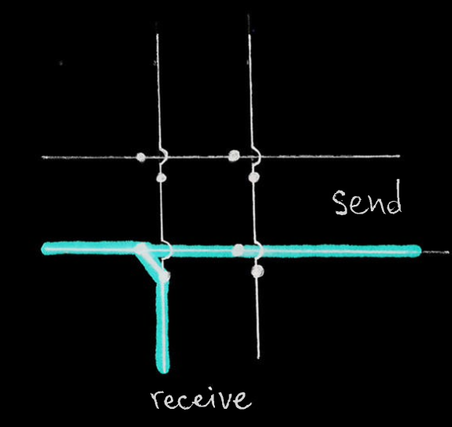
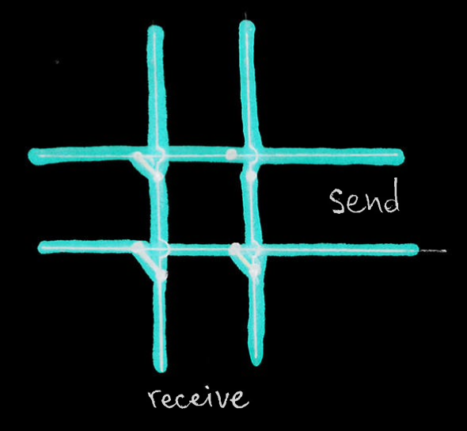
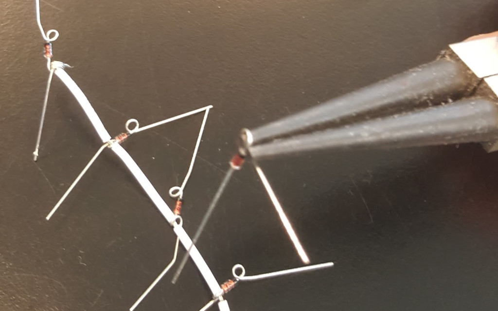
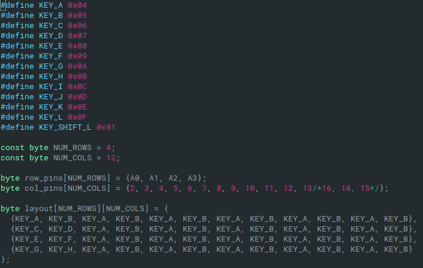

>vs_slavchev's cyberspace
>Informaton science fathers
In the time of high attention to AI and data science we talk about the high value of data and how large amounts of it are precious. Governments try to regulate how it is collected, shared and protected. But do you know who are the fathers of information science?
I stumbled upon this wikipedia article of a Belgian who lived in the 19th-20th century and the article had only 1400 visitors over the last 30 days. I thought it was a pity that I had never heard of that man. His name was Paul Otlet and he wanted access to knowledge for people. His friend and colleague Henry La Fontaine was the first president of the International Peace Bureau - the world’s oldest international peace organisation, with 10 of its members having received a Nobel Peace prize - his article even less visited.
In short Otlet got fascinated by sharing information and setup a service where cards containing text were carefully curated and systematically queried. The amount of requests quickly grew in a matter of years. This is why I mentioned wikipedia earlier, it was the same - just in 1896, and much slower. It was meant to be easier to use it for searching and had a concept similar to hyperlinks.
The government of Belgium gave him buildings and budget to expand his efforts. But then the Great war started, where one of his sons lost his life. Otlet believed that forming an international organisation that promotes knowledge sharing can prevent future wars and he defined a charter of human rights.
I felt strange that the information about this man is not more well known. And it makes me think not about the man, but about the relationship we as a civilisation have with information. Its value over the centuries and our desire to ask for it and use it.
Another thing I found interesting is that he was not stuck in his ways and beliefs. When new tech like radio and microfilm came up he started incorporating it in his efforts. I can imagine how someone else would have seen these new changes as a threat.
He did also have dreams of building a utopian city that would be the center of the knowledge of the world, but despite never being even started he still worked on what he believed.
I will leave the rest of the researching to you, I just wanted to spark an interest.
>Keyboard - detecting keys
Because we don't have enough inputs on the arduion we can implement a key matrix to detect which keys are pressed. This way the needed input are the number of columns plus rows.
The way it works is that we send a signal on one row and check which columns receive it. Then check the next row the same way.
The basic idea of the matrix scanning: 
There is the problem called ghosting - keys which are not really pressed register as being pressed. Using diodes we can prevent the effect.
Here is how it happens when diodes are not present: 
As you can see the right column does receive a signal when it is the top row's turn to send it, because the signal goes through the top-left pressed key to the left column and then to the bottom column through the bottom-left key and then to the bottom row through the bottom-right key. That means that the top right switch is registered as pressed, but it's not.
And here is the same scenario, but with diodes:

It is a good idea to test by soldering using very little tin - just enough to hold on, instead of trying to fiddle with holding them in place.
I decided to switch the wiring from the blogs I read - my rows are connected directly and columns use diodes
You can use this jewelry making pliers to make little loops that can go onto the switch legs or the wires.
The next problem to solve is debouncing - detecting that a key is pressed and realeased many times in a short time, while in fact the key is only being pressed or released, but the contact between the metal plates in the switch is not really solid while in the process of moving. After doing the research I found there are hardware and software ways to solve this problem. The hardware one is with capacitors, but that makes it more of a hassle for me. There are multiple ways to solve it with software:
- waiting for a certain amount of time over which no change happens - this way we can be sure that the state is stable and we can read this as the current situation - this is slower, but might not be noticable
- detecting the first change and registering that one, then ignoring changes for some time and checking the state after this time - this is per key and is making the decision faster than the previous one
- only checking for changes every 50 milliseconds, for example - this is fast and easy to do, but is on all keys
- track the state over time and accumulate the values to calculate to which extreme it is more close - this is not fast and might not be very robust without tuning
My first approach is to do it the simple way and put more effort when those results become unsatisfactory for my needs. So I will only check the state of all keys every 25 milliseconds.
The next thing to do is make a layout for our keys. I decided to have preprocessor macros that map a readable name to a keycode of type byte. I can send these bytes to the receiving host without mapping them. The key names I can use to initialize a 2D array which will represent how I want my keys to be ordered. When I know the position of a pressed key in terms of row and column I can then access the resulting keycode through the array.
Later on this could become a 3D array when we need to have multiple layouts.
>Keyboard - figuring it out
A colleague of mine has a fancy keyboard - the OKLB Planck. It is sold as a DIY kit that you assemble and program yourself. I was unsure how I feel about it when I first saw it. But his explanations quickly got me fascinated and I decided to make my own - even more DIY style. I would 3D print everything and make some improvements like bluetooth. Another problem he had with his was the lack of a way to indicate on which layout level you are. And maybe a gesture sensor to swipe with. And maybe a gyroscope to use it like a mouse or driving wheel.
First I decided to go simple and just make a keyboard without bluetooth or anything fancy. Then learn from the mistakes and improve to make a second one that is closer to the real goal.
I ordered cheap switches and a pcb to make the process easier. At this point I thought that a big step of this project will be coming up with a good layout for my needs. Also because I take key bindings too seriously.
I found 3D models from the original designer and decided to print them. I also found a model of a keycap and modified it to make it printable without much support and add a bump for the index fingers. The keycaps turned out not fitting the switches, so I had to rework them a few more times.
The 3D models can be found here on my github.
The pcb was not fitting the models I found and was not very happy with them anyway, and they were not designed to be 3D printed to start with. I started planning how could I make a case that does not use bolts and nuts.
I printed a few simple clips see if I could use those. Some of them I printed impoperly, some were very stiff and I struggled to design better ones. I realised something very important then: instead of going for a perfect solution I should have gone for a satisfactory one and improve when needed.
I immediately made a few simple holes in a new top half model and found some M3 and M2 12mm bolts. After that I started designing a new bottom case, but adjusting it's height would have to wait.
Another problem was that I damaged or bricked the PCB so I also had to start again with that. The big problem was that I had soldered the switches onto the PCB, so I had to unsolder them one by one. It cost me 4 hours and a few burns to do that. But I did learn to do less ambitious planning upfront. I will never forget this lesson because fixing broken switches is one of the most tedious and fiddly things I’ve ever done.
The next step was to figure out how to use an Arduino for the keyboard. I could flash it with the QMK firmware. Or write some code myself.
When you want to detect button presses on 48 keys while having less than 48 pins is not straight forward. So I found a few excellent blogs on how matrix scanning works:
- http://pcbheaven.com/wikipages/How_Key_Matrices_Works/
- http://blog.komar.be/how-to-make-a-keyboard-the-matrix/
After understanding the hardware I did some searching. First I found the matrix scanning code in a file from the Keypad library for Arduino. Then I found a file from a stenography keyboard open source project, which also did a similar job. It was very helpful to learn from this available code.
Making a keyboard without a pcb is called handwiring and I found a nice post about it: https://geekhack.org/index.php?topic=87689.0.
With the plan changed, and my student budget limits, I actually had more fun finding my way through.
>DnD murder mystery inspiration
I wanted to make a murder mystery for my DnD group. When the moment came and I started preparing for the session I found there is a lot of advice, but not a lot of easy inspiration. There are a few prepared adventures, and those are not very polished or detailed. I used some of them for inspiration and a base and stole some ideas from them. Maybe you can take mine and improve it to have fun with your players.
I had planned his for along time as I expected that one of my players would not attend at some point. Perfect opportunity to throw the characters into a pocket dimension for a one shot without advancing the main story. I gave one of them this book with empty pages and a whirlpool on the cover.
Make sure to have prepared statblocks for all the stuff they can encounter.
I was greatly inspired by the adventure called "How not to host a murder mystery"
I have left out the names as I think it's easier to navigate the story since we are looking at it's structure and not for entertainment.
Everything starts in a whirlpool in the sea, hence the cover of the book. The characters are on a small ship with
The mansion,
Garden:
Morning glory - a flower that blooms in the morning because of sunlight and it’s petals are closed when in shadow or darkness; a
letter is hidden under the open petals in the day, but when darkness makes them close it is easy to spot. The letter is written
with the same handwriting as the book of the
Time before dinner: the players are invited to do something before it is time for dinner:
- With
and to practice spells [openly said] (so all 3 including the PC seem suspicious); doesn’t want to waste mana; The calls by his middle-name. The other players will not know whom this name belongs when they see it. - With sister to show you around: offers a reward a knife from the father’s collection of rare craftsman knives [openly said] (so the sister and the PC sound suspicious) In private they find that one specific knife is missing from its stand - Lord Kelnor’s pearl dagger
- With cook to help prepare the big dinner. [openly said]; In private he tells the motive of both
and . He is grumpy and very skilled with cutting meat with his knife; he says the sister has a necklace with a gem that allows her to seduce and control weak men
The players are given the information separately through notes and they should get a bit confused and suspect each other.
Dining room:
During dinner the characters can talk to
The real killer has to be found before sunrise otherwise the framed
Cook - not speaking a lot / low voice / bitter
The study:
Has a book with spells (belongs to:
Trophies on a shelf saying: First place in spellcasting/conjuring/arcana competition -
Building the structure of the mystery:
has motive and opportunity(to go bring victim), but no means has motive(fame,praise), means(stabbing), opportunity(the fact that the apprentice and the sister now have a motive) - Cook has means(knife with blood), no motive and no opportunity
- Sister has motive(she is younger and can inherit the mansion that she likes very much if her brother dies), but no means and no opportunity, but definitely suspicious being an assassin
- Old nanny - no motive, no means, no opportunity
>Switching to and customizing IntelliJ
Hello! Read on if you decided to switch to IntelliJ, set it up, make it comfortable and learn how to be more productive with it. This post covers some settings and custom shortcuts.
The first things that annoyed me were the popups in the top-right corner. To disable some of them: 'Event log' on the bottom-right (or Speech bubble icon) -> Settings. Disabling the balloons doesn't hide the notifications from the event log, so you can check that if you need to.
Next up is removing the default comment generated at the top of a new class file.
File -> Settings -> Editor -> File and Code Templates -> 'Includes' tab -> File header -> the comment is on the right
-> delete it.
If you would like to use this feature make sure to print the date in a less ambiguous format.
Another one is the vertical line in the editor that is set to 120 chars per line by default. To change the line
limit:
File -> Settings -> Editor -> Code Style -> Right margin columns.
The Google Java Style Guide recommends a column limit of 100 chars.
Ok hotkeys. Some are very hard to reach, hard to learn or conflict with something else. Here are some recommendations
how to make your life easier. You don't need to remove the old shortcut, so if someone else wants to use your Idea they
can still use the default keys they know. Go to
File -> Settings -> Keymap
and find the ones you need to change, then click on
them and select 'Add keyboard shortcut'. All of the recommended ones are unused and should be added as alternatives. For each
entry I have specified: the name of the command, the default shortcut, the suggested one and an explanation.
Rename: default - Shift F6, suggested - Alt R. This default key is famous for being so hard to reach. Usage of rename should be encouraged as naming things is one of the hardest tasks in programming. Remember it as R stands for rename.
Find usage: default - Alt F7, suggested - rightAlt U. Shows you where a method/variable is used. One hand - easy. Associate U with usage.
Surround with...: default - Ctrl Alt T, suggested - Alt T. Surrounds the selected code with if/elseif/while/for/try... etc. Some Linux distros have the terminal shortcut bound to Ctrl Alt T so that causes a conflict. Even if you don't care about that the alternative is still 1 less key to press.
Delete line at caret: default - Ctrl Y, suggested - Alt X. In Eclipse it was easy to Ctrl D with one hand, but Ctrl Y requires both hands. The Alt and X keys are next to each other and this one is very easy to press. The X can be associated with double-crossing something.
Run: default - Alt Shift F10, suggested - Alt P. Usefulness depends on how often you run the project. P as in play for the green arrow icon. An even easier variant is Alt E as in execute.
Next, I have compiled a list of the more notable shortcuts. Some are based on people's opinion from Stackoverflow. A more complete list can be found here and here and you can always check the key for actions by pressing Ctrl Alt A in Idea.
Go to declaration => Ctrl B
Open class => Ctrl N
Rename refactor => Alt R; Shift F6
Refactor variable from expression => Ctrl Alt V
Extract method => Ctrl Alt M
Smart completion => Ctrl Shift Space
Cyclic expand word => Alt forwardslash
Complete statement => Ctrl Shift Enter
Reformat, Checkstyle, fix imports => Ctrl Alt L
Find in whole project => Ctrl Shift F
Switch tabs => Ctrl Tab
Quick fix/intentions => Alt Enter
Smart template => iter/psf/thr Tab
Find Usage => rightAlt U; Alt F7
Brief info => Ctrl mouseover
Duplicate => Ctrl D
New line below => Shift Enter
New line above => Ctrl Alt Enter
Expanding select => Ctrl W
Delete to word start => Ctrl Backspace
Delete line => Alt X; Ctrl Y
Paste previous copies => Ctrl Shift V
JavaDoc => Ctrl Q
Run => Alt P; Alt Shift F10
Go to previous/next method => Alt Up/Down
Go back to code => Ctrl Alt Left
Go to next error => F2
Parameter info in method call => Ctrl P
Show TODO list => Alt 6
Bring up the file/class/method quicksearch => Shift Shift
Open the switcher => Ctrl Tab
Hide active window => Shift Escape
If you think a shortcut or setting you often use is missing - tell me!
>The mystery of termite communication
Until the 1960s scientists could not explain how termites manage to organise their activity to gather and pile up in one place all the wood pieces they find. Different theories tried to explain this like unaudible languages, but the truth was that they just followed simple rules, from which emerged a complex behaviour.
By taking a piece of wood when they encounter it and dropping it when they encounter another one the termites move the pieces to one or more piles, which in turn also get combined into bigger piles. The result is cleared areas and compact piles.
My implementation of the simulation: on github